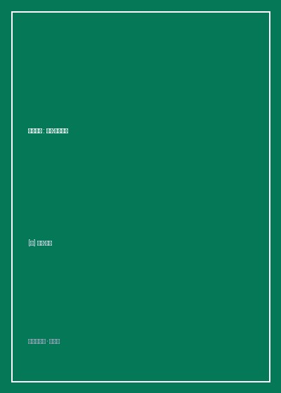

《毫无意义》

总体观点
《毫无意义：伍迪·艾伦自传》（Apropos of Nothing）是二十世纪世界电影史上最具个人辨识度的殿堂级导演、编剧与喜剧大师伍迪·艾伦在八十五岁高龄写就的生平回忆录。该书的出版过程本身就堪称一场文化传奇——在欧美“Metoo”运动与养女迪伦·法罗的性侵指控重燃的舆论风暴中，原定出版巨头阿歇特出版社遭遇员工罢工抗议撕毁出版合同，最终由独立出版社接盘推向市场，瞬间引发全球读者的抢购与轰动热议。
全书贯穿着伍迪·艾伦标志性的纽约犹太知识分子喋喋不休的神经质口吻、密集得令人窒息的机智笑料与深刻入骨的悲观主义自嘲。伍迪·艾伦从布鲁克林平凡清贫的犹太移民家庭童年讲起——厌恶学校、逃课看电影、十六岁靠给报纸写一句话搞笑段子养活自己；随后详尽回溯了自己在六七十年代从单口相声演员（Stand-up Comedian）蜕变为享誉世界的独立电影作者的辉煌历程，揭秘了《安妮·霍尔》《曼哈顿》《开罗紫玫瑰》《赛末点》等数十部影史名篇的幕后轶事。
在全书争议最大的核心篇章中，伍迪·艾伦以大量经得起司法法庭检验的详实证据与第三方心理医学独立调查报告，直面回应了前女友米亚·法罗长达数十年的复仇诬陷，全景还原了当年与顺宜相恋结婚并相伴三十年的真实内幕。然而全书最动人的力量，依然是伍迪·艾伦对艺术与死亡的形而上学通透——书名《毫无意义》即是他一生的世界观注脚：宇宙冷漠而盲目，人生在本质上没有任何神圣意义与死后救赎；但他依然选择在八十五岁高龄每年坚持写一个剧本、拍一部电影、每周一晚上在爵士酒吧吹黑管。因为既然一切毫无意义，那么在浩瀚虚无中尽情讲一个好笑的段子、给世人带去两小时欢笑，便是生命所能拥有的最高尊严。
核心观点
-
1. 幽默是痛苦的止痛泵：用自嘲拆解沉重悲观的存在主义虚无
世间充满了疾病、衰老、背叛与不可避免的死亡。面对无法逾越的虚无，严肃的悲愤只会加剧痛苦，唯有将灾难转化为自我解嘲的笑话，心智方能存活。
“我并不害怕死亡，我只是不想在它发生的时候在场。”伍迪·艾伦用密集的段子将绝望层层包裹，化解了形而上学焦虑对大脑的直接灼伤。 -
2. 工匠式的创作伦理：像鞋匠钉皮鞋一样保持年产一部电影的自律
不要把艺术神圣化为等待灵感降临的巫术。卓越的创作者如同一名踏实的管道工，每天准时坐到打字机前敲击键盘，无论上一部作品得奖还是惨败。
伍迪·艾伦五十年如一日使用一台产于1952年的奥林匹亚便携式机械打字机写作，从不用电脑，每年秋天准时开机拍摄，哪怕被好莱坞封杀依然自筹资金拍出新作。 -
3. 名利场的虚妄无常：奥斯卡小金人抵不过星期一的一场爵士乐演出
好莱坞的名声与奖项不过是充斥着商业公关的虚荣马戏团。外界的赞美或唾骂在本质上都是过眼云烟，唯有创作过程本身的纯粹沉浸才是真实奖赏。
《安妮·霍尔》斩获四项奥斯卡大奖的颁奖典礼当晚，伍迪·艾伦没有去好莱坞走红毯，而是穿着破旧牛仔裤在曼哈顿卡尔莱尔酒店酒吧与乐队吹了一整夜单簧管。 -
4. 舆论狂欢中的清醒坚守：司法证据与真相优先于政治正确猎巫
当公众舆论被复仇狂热与片面煽情绑架时，独立思考者必须以事实和司法调查结论为准绳，敢于在千夫所指中保持内心的清白与淡定。
详述耶鲁-纽黑文医院儿童性侵调查专家组长达数月的独立调查报告，证明性侵指控系米亚·法罗在抚养权争夺中对幼童实施的恶意洗脑诱导构陷。 -
5. 毫无意义的达观人生：在无意义的宇宙荒原上吹响快乐黑管
承认人生的终极荒谬并不等于走向自杀或沉沦。正是因为没有来世与天国审判，当下这一口热咖啡、爱人的微笑与电影院里的欢笑声，才显得如此神圣珍贵。
“生命不仅毫无意义，而且还非常短暂。与其抱怨这个糟糕的宇宙，不如抓紧时间点一份美味的熏牛肉三明治，看一场马克斯兄弟的滑稽老电影。”
全书思维导图 · 知识脉络树
全书结构
-
第一部分：布鲁克林童年与魔术写手的养成（1935-1959）
回溯在纽约布鲁克林犹太下层社区的童年，厌恶学校规训、痴迷棒球与黑管、十六岁靠向报纸专栏兜售幽默笑话自立，展现天生喜剧早熟才华。
少年艾伦逃学躲在时代广场昏暗的电影院里一天连看三部老片，在地铁车厢里抓紧每五分钟用圆珠笔在废纸片上写下十几个令人捧腹的机智段子。 -
第二部分：单口喜剧演员与曼哈顿电影黄金时代（1960-1980）
在格林威治村夜总会登台开创神经质知识分子单口相声风格，挺进好莱坞执导《傻瓜大闹科学城》《安妮·霍尔》《曼哈顿》，斩获奥斯卡巅峰荣耀。
详述与黛安·基顿长达数年的相恋与艺术共鸣，剖析如何将原本冗长无序的散文手稿剪辑为影史经典《安妮·霍尔》的创作幕后。 -
第三部分：米亚·法罗风暴与舆论审判真相（1980-1995）
以详实事实全面复盘与米亚·法罗十二年合作与分歧、与顺宜相恋的心路、面对性侵指控两次国家级司法调查宣布无罪的完整历史全景。
公开纽约州社会服务部与警方两家独立调查机构的官方无罪结论文件细节，反思大众媒体在轰动性丑闻面前如何选择性失明与嗜血狂欢。 -
第四部分：晚年欧洲漫游与八十五岁的安宁终章（1995至今）
移师欧洲拍摄《赛末点》《午夜巴黎》，与顺宜相濡以沫三十年的平淡幸福，八十五岁面对疫情与衰老的超然反思，以黑色幽默达观落幕。
“如果我明天死去，请不要把我的骨灰撒在大海里，我很容易晕船。只要记住我曾拍过几部还算让人发笑的电影，那就完全足够了。”